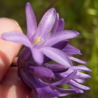

wild hyacinths
Dichelostemma spp.
Distinguishing features:
- crown color, leaning in or out
- perianth tube narrowed above ovary or not
The defining difference is the number of stamens, but I can't count them without taking apart the flower.
There is supposed to be a difference in bracts color, but I can't consistently see it on CalPhotos.
 blue dicks
blue dicks
- perianth blue, blue-purple, pink-purple, or white
- crown erect, leaning toward anthers, outward at tip, white
- perianth tube not narrowed above ovary
- bracts generally dark purple (paler, striped dark purple
- common throughout the bay area
 ookow
- perianth blue-purple
- crown erect, leaning away from anthers, ±purple
- perianth tube narrowed above ovary or ±so
- bracts pale purple to green
- scattered throughout the bay area
CalPhotos
wild hyacinth (Dichelostemma multiflorum)
- spreading corolla lobes (although blue dicks can sometimes be more or less spreading)
- the three crown pieces are each entire/truncate, not notched
Pages that link to this one:
Purple flowers
All flowers
BAFG – Copyright 2019 Chris Nelson
 blue dicks
blue dicks
{kind=link}